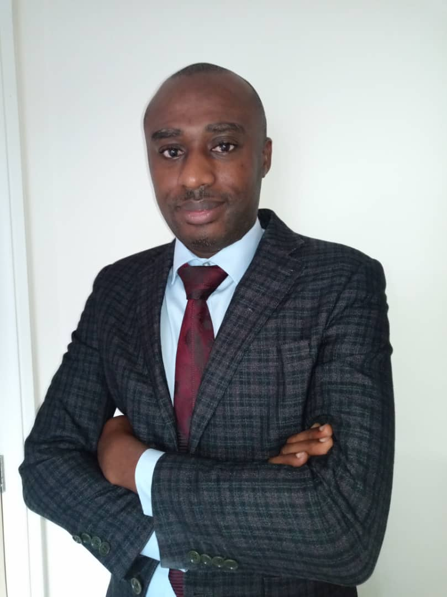

We are a Nigeria based health care organisation formed and managed by professionals with international experience in health management, capacity building and consultancy. We are focused on addiction prevention, treatment and rehabilitation; mental health services and medical supplies.
Our goal is to engage in addiction and mental health and related services which will be specifically tailored towards meeting needs in our local environment.
We aim to achieve these through continuous improvement of our processes based on ongoing research, human capacity development, logistics and consultancy services in various aspect of healthcare.
We are very passionate about contributing towards improving Nigeria’s healthcare sector especially the less represented area of mental healthcare.
Our vision is to be the best multifunctional addiction and mental healthcare servicing organisation focusing on prevention, treatment and rehabilitation of these health disorders.
Our mission is to provide unparalleled and effective service by adapting evidence-based methods and international best practices to the Nigerian context. We will use a non-stigmatising approach regardless of gender, religion or ethnicity or culture with utmost dignity, understanding, firmness and respect.
This is the positive change needed in health care service provision in Nigeria.
Our driving force is to simplify addiction and mental healthcare service provision and related services at all levels. We aim to make it affordable to all members of the society without sacrificing effectiveness.
Our services are available both in person and online. We aim to work with you using whatever means suit your needs.
